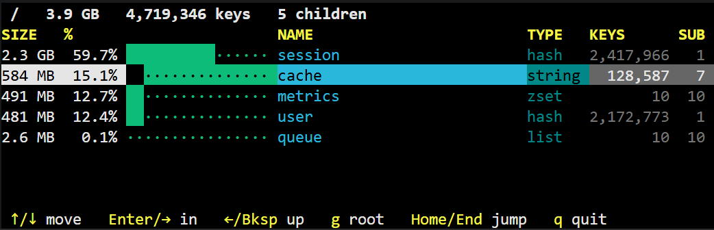

ncdu for Redis RDB snapshots. Stream the dump, aggregate memory by prefix, and walk the tree in a TUI.

Never loads the full RDB into memory. Reads via a 1 MB buffered stream — even 50 GB dumps are fine.
Keys are split by separator and grouped into a size-sorted tree. Instantly see which prefix dominates.
Integer, UUID, and hex segments collapse into <n>, <uuid>, <hex> so user:<uuid>:profile stays one subtree.
When a node exceeds N distinct children (default 1000), overflow goes into a <*> bucket — RAM stays bounded.
Drill into any node, go back, jump to root. Cursor position is remembered per visited node.
Only the aggregated prefix tree lives in RAM — roughly 150 B per distinct path. Keys themselves are discarded.
go install github.com/discrimy/rdbdu@latest
| Key | Action |
|---|---|
| ↑ ↓ | Move selection |
| Enter → | Drill into node |
| ← Backspace | Go up one level |
| g | Jump back to root |
| Home End | Jump to top / bottom |
| q | Quit |
| Flag | Default | Description |
|---|---|---|
-sep | : | Separator for splitting keys into tree segments |
-depth | 8 | Max prefix depth tracked |
-raw | off | Disable normalization of numeric/UUID/hex segments |
-top | 1000 | Max children shown per level |
-collapse | 1000 | Fold nodes with >N children into <*> (0 = disabled) |